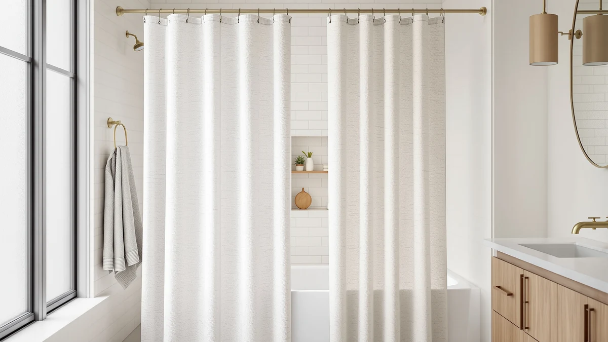

Anroduo Scalloped Linen Textured Shower Curtain Review (2026): Worth It?


Quick Answer
This anroduo scalloped linen textured shower curtain review compares the ANRODUO Cream Beige Scalloped Linen against three shorter alternatives on size, material and price: Jowels' natural linen blend, XOGUIBO's ruffled farmhouse curtain and Madison Park's sheer striped curtain. ANRODUO ships 72 inches wide by 108 inches long for a taller drop, while the other three run from 72 to 96 inches long, so the right pick depends on how much extra height your shower rod actually needs.
Our pick: ANRODUO Cream Beige Scalloped Linen, $28.11 Check Price on Amazon
Bottom line: our top pick is the ANRODUO Cream Beige Scalloped Linen Textured Shower Curtain at $28.11.
Things to Know Before You Buy
- The ANRODUO Cream Beige curtain ships at 72 inches wide by 108 inches long, 36 inches longer than the standard 72 inch drop, which sets it apart from the three shorter alternatives compared in this extra-long curtain review.
- At $28.11, it costs about 80 cents to a dollar more than Jowels, XOGUIBO and Madison Park, the three curtains compared here, which run from $26.99 to $27.29.
- "Linen" in the name describes the weave's look, not the material: the curtain is a polyester and PEVA blend, not woven linen fabric, unlike Jowels' actual linen blend.
- The fabric is dense enough that the listing says a separate liner isn't necessary, unlike Madison Park's sheer curtain, whose listing recommends pairing it with one.
- None of the four curtains in this comparison publishes a star rating or review count, so there is no verified review history to lean on for any of them.
This anroduo scalloped linen textured shower curtain review looks at a single listing, a 72 inch wide by 108 inch long curtain in cream beige with a black scalloped hem, and asks whether its faux linen weave and $28.11 price justify the extra length next to three shorter, similarly priced alternatives.
We compared its listed size, material and price against Jowels' natural linen blend curtain, XOGUIBO's ruffled farmhouse curtain and Madison Park's sheer striped curtain, three curtains in the same general price band. The comparison isn't a straight swap on size. ANRODUO ships 72 inches wide by 108 inches long for a taller drop, while Jowels and Madison Park ship 72 by 72 inches and XOGUIBO ships 72 by 96 inches, so each one solves a different height problem depending on what your shower rod actually needs.
Why You Should Trust Us
Ilane Tall covers bathroom textiles and shower hardware for Best Shower Curtains, and this anroduo scalloped linen textured shower curtain review follows the research process used across the site. We compare manufacturer specs, current Amazon pricing and patterns in verified owner reviews instead of running a physical testing lab, and we do not claim to own, hang or use any curtain covered here. For this review, we pulled ANRODUO's listed size, material, price and included hooks straight from the retailer, then checked those figures against the same data for Jowels, XOGUIBO and Madison Park. You can read the full methodology behind every review on this site on our how we research page, and that same approach shaped every figure here, from the specs table to the final verdict.
Our Research Experience
Our process for this anroduo scalloped linen textured shower curtain review starts with each manufacturer's own listing: size, material, price and included accessories, checked against the three comparison curtains on the same points. From there, we read through the patterns in verified owner reviews on comparable linen-look and weighted-hem curtains to see how scalloped hems, ruffled hems and sheer fabrics tend to hold up once a curtain is hanging in a real bathroom. We did not buy, hang or inspect any of the four curtains ourselves. None of the four listings in this comparison publishes a star rating or review count, so we weighed spec sheets and pricing against each other rather than leaning on a review tally that doesn't exist yet for any of them.
Overview & Specs

ANRODUO Cream Beige Scalloped Linen
What we like
- Ships 36 inches longer than a standard curtain, at 108 inches total, for taller enclosures or high-mounted rods
- Faux linen fabric is dense enough that the listing says a separate liner isn't necessary
- Includes 12 rust-resistant metal hooks, so you don't need to buy hooks separately
Flaws but not dealbreakers
- The 108 inch length is excessive for a standard-height shower and may need hemming to avoid pooling at the floor
- The listing doesn't publish a star rating or review count, the same gap shared by all three alternatives in this comparison
| Material | Polyester / PEVA |
| Size | 72"W x 108"L (Pack of 1) |
ANRODUO builds this curtain around two choices: a neutral cream beige colorway and an unusually tall 108 inch length, 36 inches more than the 72 inch size two of the three alternatives use. The fabric is a polyester and PEVA blend woven with a two-yarn parallel pattern that gives it a textured, cross-hatched surface instead of a flat sheet, finished with a black scalloped edge along three sides. The listing includes 12 bonus metal hooks, described as rust-resistant and easy to slide, so setup doesn't require a separate hook purchase. At $28.11, it costs about 80 cents to a dollar more than Jowels, XOGUIBO and Madison Park in this comparison, all priced between $26.99 and $27.29.
Fabric density is the main selling point beyond color and length. The listing describes the weave as thicker than a traditional single-ply curtain, dense enough that it isn't see-through and doesn't need a liner behind it for privacy, a contrast with Madison Park's sheer curtain, whose own listing recommends adding one. That density adds real weight to a curtain that's already 36 inches longer than standard, which is worth factoring in before you commit to the extra length: a tall enclosure or a rod mounted higher than a standard stall calls for will make good use of the extra drop, while an average bathroom will likely need to hem the bottom or accept fabric pooling near the tub.
What We Liked
The clearest strength in this anroduo scalloped linen textured shower curtain review is fabric density. ANRODUO's faux linen weave is built thick enough that the listing skips the usual advice to pair it with a liner, which simplifies setup compared to Madison Park's sheer curtain, where a liner is explicitly recommended. The black scalloped hem gives it a decorative edge that a plain rectangular curtain doesn't offer, and the 108 inch length is the longest of the four curtains compared here by a wide margin over Jowels and Madison Park's 72 inch drop and XOGUIBO's 96 inch drop. Twelve rust-resistant hooks ship in the box, so you aren't stuck sourcing twelve more on top of the $28.11 price, and the two-yarn parallel weave gives the surface a textured, woven look rather than the flat sheen of a basic polyester curtain.
What Could Be Better
The 108 inch length is the biggest question mark in this comparison. Most bathrooms use a curtain closer to 72 or 74 inches long, so this curtain's extra three feet only pays off for a tall enclosure or a rod set higher than usual. If your rod sits at a normal height, you're left hemming the bottom or accepting fabric pooling near the tub, neither of which the product listing mentions. ANRODUO also doesn't publish a star rating or review count, which this anroduo scalloped linen textured shower curtain review can't work around with specs alone, so you have less third-party proof to lean on than you would with a curtain that already has an established review history. The curtain is a faux linen blend rather than Jowels' actual 30% natural linen fabric, which matters if a woven-linen fiber content is the deciding factor for you.
Who Is It For?
The ANRODUO Cream Beige Scalloped Linen curtain fits a shower with real extra height to cover, a tall enclosure or a rod mounted well above a standard stall, since the 108 inch length only pays off in that specific situation. It also suits anyone set on a neutral cream accent with a decorative scalloped hem rather than the natural linen, ruffled farmhouse or sheer striped looks of the rest of this comparison. If your shower rod sits at a standard height, or you want a curtain with an actual linen fiber content, compare it against Jowels, XOGUIBO or Madison Park below. Shoppers furnishing more than one bathroom can also browse our best extra-long shower curtains roundup for more options built around the same extra drop as ANRODUO.
Alternatives to Consider
If the ANRODUO curtain's 108 inch length doesn't match your shower, or its missing review history rules it out, these three alternatives solve a different problem: a standard or near-standard length instead of extra height. Jowels and Madison Park ship 72 inches wide by 72 inches long, XOGUIBO ships 72 by 96 inches, and all three are priced within a dollar of ANRODUO's $28.11.

Also Great
Jowels Natural Linen Fabric Shower
Priced a bit below ANRODUO at $27.29, Jowels ships a standard 72 by 72 inch curtain made of an actual 30% natural linen and 70% polyester blend, with a weighted hem and a water-resistant finish, though the listing recommends pairing it with a separate liner.
$27.29
Check Price on Amazon
Also Great
XOGUIBO Farmhouse Shower Curtain Ruffle
At $27.19, XOGUIBO splits the difference on length, running 72 by 96 inches, 24 inches longer than Jowels and Madison Park but 12 inches short of ANRODUO, in a beige linen-blend fabric finished with a ruffled bottom hem instead of ANRODUO's scalloped edge.
$27.19
Check Price on Amazon
Best Value
Madison Park Anna Sheers Shower
The cheapest of the four at $26.99, Madison Park's Anna Sheers curtain ships at a standard 72 by 72 inches with a textured striped accent design, but its sheer fabric is thin enough that the listing recommends a separate liner, unlike ANRODUO's denser faux linen weave.
$26.99
Check Price on AmazonFrequently Asked Questions
How long is the ANRODUO Cream Beige Scalloped Linen Shower Curtain?
It ships at 72 inches wide by 108 inches long, 36 inches longer than the 72 inch length most bathrooms use. That extra length suits a tall shower enclosure or a rod mounted higher than usual, not a standard-height setup.
What is the ANRODUO shower curtain made of?
It is a polyester and PEVA blend woven with a two-yarn parallel pattern to look like linen. The word linen in the name describes the texture, not the material, since the curtain contains no woven linen fiber, unlike Jowels' actual 30% natural linen blend.
Is the ANRODUO Cream Beige Scalloped Linen curtain worth it compared to Jowels, XOGUIBO and Madison Park?
This anroduo scalloped linen textured shower curtain review found it priced about a dollar more than the three alternatives, which run from $26.99 to $27.29. Length matters more than price here: ANRODUO is built for an extra-tall drop at 108 inches, while Jowels and Madison Park ship at a standard 72 inches and XOGUIBO ships at 96 inches, so the better buy depends on how much height your shower actually needs.
Final Verdict
This anroduo scalloped linen textured shower curtain review comes down to one tradeoff: extra length versus standard length. ANRODUO is the only curtain in this comparison built for the former, running 72 inches wide by 108 inches long at $28.11, with a neutral cream colorway, a black scalloped hem and 12 included hooks. Jowels and Madison Park ship at a standard 72 inches long for $27.29 and $26.99, and XOGUIBO lands in between at 96 inches for $27.19. None of the four publishes a star rating, so there's no review history to lean on for any of them. For a tall enclosure or a high-mounted rod, the ANRODUO Cream Beige Scalloped Linen curtain is the pick worth ordering. For a standard-height shower, skip straight to Jowels, XOGUIBO or Madison Park instead.